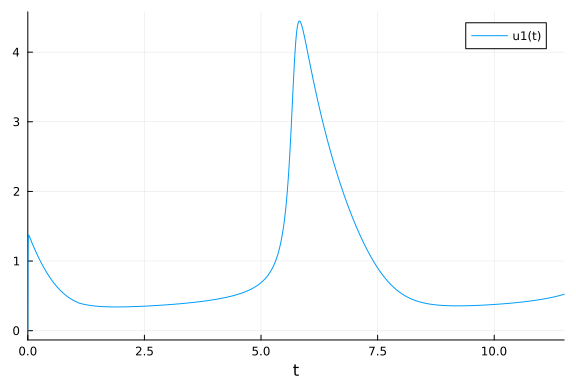
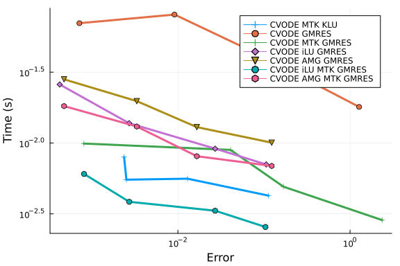
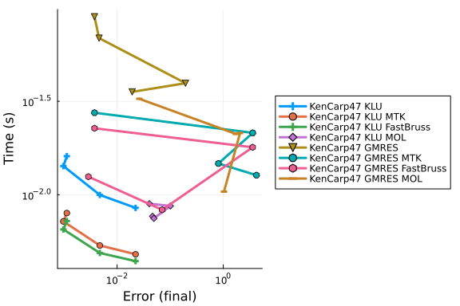
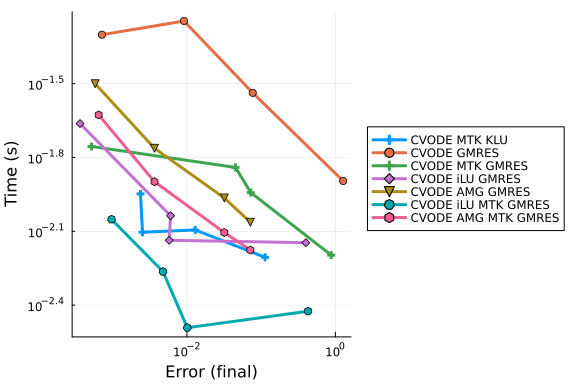
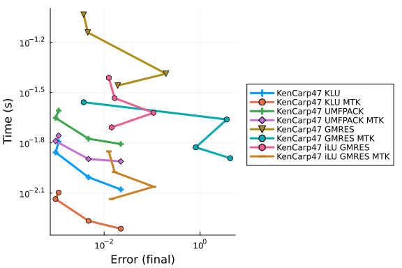
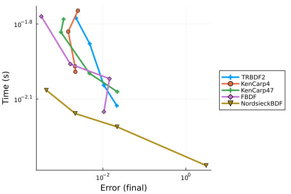
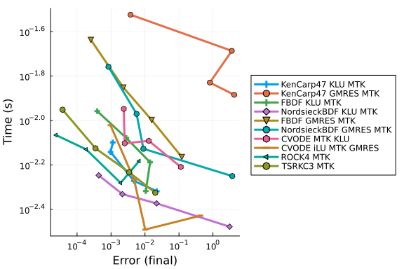
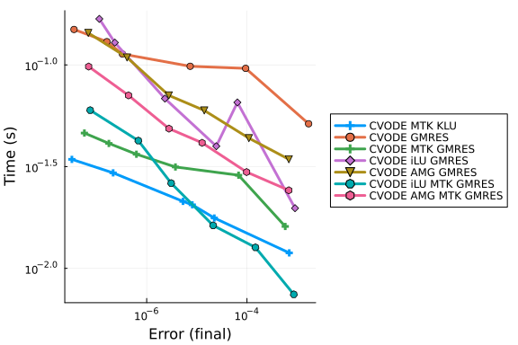
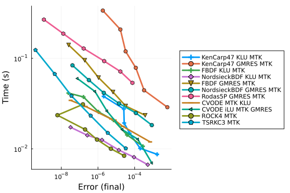

Brusselator Work-Precision Diagrams
using OrdinaryDiffEq, DiffEqDevTools, Sundials, ParameterizedFunctions, Plots,
ODEInterfaceDiffEq, LSODA, SparseArrays, LinearSolve,
LinearAlgebra, IncompleteLU, AlgebraicMultigrid, Symbolics, ModelingToolkit,
RecursiveFactorization
using OrdinaryDiffEqBDF, OrdinaryDiffEqSDIRK, OrdinaryDiffEqStabilizedRK
gr()
const N = 8
xyd_brusselator = range(0, stop = 1, length = N)
brusselator_f(x, y, t) = (((x-0.3)^2 + (y-0.6)^2) <= 0.1^2) * (t >= 1.1) * 5.0
limit(a, N) = a == N+1 ? 1 : a == 0 ? N : a
function brusselator_2d_loop(du, u, p, t)
A, B, alpha, dx = p
alpha = alpha/dx^2
@inbounds for I in CartesianIndices((N, N))
i, j = Tuple(I)
x, y = xyd_brusselator[I[1]], xyd_brusselator[I[2]]
ip1, im1, jp1, jm1 = limit(i+1, N), limit(i-1, N), limit(j+1, N), limit(j-1, N)
du[i, j, 1] = alpha*(u[im1, j, 1] + u[ip1, j, 1] + u[i, jp1, 1] + u[i, jm1, 1] -
4u[i, j, 1]) +
B + u[i, j, 1]^2*u[i, j, 2] - (A + 1)*u[i, j, 1] +
brusselator_f(x, y, t)
du[i, j, 2] = alpha*(u[im1, j, 2] + u[ip1, j, 2] + u[i, jp1, 2] + u[i, jm1, 2] -
4u[i, j, 2]) +
A*u[i, j, 1] - u[i, j, 1]^2*u[i, j, 2]
end
end
p = (3.4, 1.0, 10.0, step(xyd_brusselator))
input = rand(N, N, 2)
output = similar(input)
sparsity_pattern = Symbolics.jacobian_sparsity(brusselator_2d_loop, output, input, p, 0.0)
jac_sparsity = Float64.(sparse(sparsity_pattern))
f = ODEFunction{true, SciMLBase.FullSpecialize}(brusselator_2d_loop; jac_prototype = jac_sparsity)
function init_brusselator_2d(xyd)
N = length(xyd)
u = zeros(N, N, 2)
for I in CartesianIndices((N, N))
x = xyd[I[1]]
y = xyd[I[2]]
u[I, 1] = 22*(y*(1-y))^(3/2)
u[I, 2] = 27*(x*(1-x))^(3/2)
end
u
end
u0 = init_brusselator_2d(xyd_brusselator)
prob = ODEProblem(f, u0, (0.0, 11.5), p);prob_mtk = ODEProblem(
complete(modelingtoolkitize(prob)), [], (0.0, 11.5), jac = true, sparse = true);Also comparing with MethodOfLines.jl:
using MethodOfLines, DomainSets
@parameters x y t
@variables u(..) v(..)
Dt = Differential(t)
Dx = Differential(x)
Dy = Differential(y)
Dxx = Differential(x)^2
Dyy = Differential(y)^2
∇²(u) = Dxx(u) + Dyy(u)
brusselator_f(x, y, t) = (((x-0.3)^2 + (y-0.6)^2) <= 0.1^2) * (t >= 1.1) * 5.0
x_min = y_min = t_min = 0.0
x_max = y_max = 1.0
t_max = 11.5
α = 10.0
u0_mol(x, y, t) = 22(y*(1-y))^(3/2)
v0_mol(x, y, t) = 27(x*(1-x))^(3/2)
eq = [
Dt(u(x, y, t)) ~
1.0 + v(x, y, t)*u(x, y, t)^2 - 4.4*u(x, y, t) + α*∇²(u(x, y, t)) +
brusselator_f(x, y, t),
Dt(v(x, y, t)) ~ 3.4*u(x, y, t) - v(x, y, t)*u(x, y, t)^2 + α*∇²(v(x, y, t))]
domains = [x ∈ Interval(x_min, x_max),
y ∈ Interval(y_min, y_max),
t ∈ Interval(t_min, t_max)]
bcs = [u(x, y, 0) ~ u0_mol(x, y, 0),
u(0, y, t) ~ u(1, y, t),
u(x, 0, t) ~ u(x, 1, t), v(x, y, 0) ~ v0_mol(x, y, 0),
v(0, y, t) ~ v(1, y, t),
v(x, 0, t) ~ v(x, 1, t)]
@named pdesys = PDESystem(eq, bcs, domains, [x, y, t], [u(x, y, t), v(x, y, t)])
# Method of lines discretization
dx = 1/N
dy = 1/N
order = 2
discretization = MOLFiniteDifference(
[x=>dx, y=>dy], t; approx_order = order, jac = true, sparse = true, wrap = Val(false))
# Convert the PDE system into an ODE problem
prob_mol = discretize(pdesys, discretization)ODEProblem with uType Vector{Float64} and tType Float64. In-place: true
Non-trivial mass matrix: false
timespan: (0.0, 11.5)
u0: 128-element Vector{Float64}:
0.0
0.9766542925609525
2.1921268033293604
3.063590342214851
3.3750000000000004
3.063590342214851
2.1921268033293604
0.9766542925609525
0.0
0.9766542925609525
⋮
1.7861773953054048
0.7957923865311465
0.7957923865311465
0.7957923865311465
0.7957923865311465
0.7957923865311465
0.7957923865311465
0.7957923865311465
0.7957923865311465using Base.Experimental: Const, @aliasscope
macro vp(expr)
nodes = (Symbol("llvm.loop.vectorize.predicate.enable"), 1)
if expr.head != :for
error("Syntax error: loopinfo needs a for loop")
end
push!(expr.args[2].args, Expr(:loopinfo, nodes))
return esc(expr)
end
struct Brusselator2DLoop <: Function
N::Int
s::Float64
end
function (b::Brusselator2DLoop)(du, unc, p, t)
N = b.N
s = b.s
A, B, alpha, dx = p
alpha = alpha/abs2(dx)
u = Base.Experimental.Const(unc)
Base.Experimental.@aliasscope begin
@inbounds @fastmath begin
b = ((abs2(-0.3) + abs2(-0.6)) <= abs2(0.1)) * (t >= 1.1) * 5.0
du1 = alpha*(u[N, 1, 1] + u[2, 1, 1] + u[1, 2, 1] + u[1, N, 1] - 4u[1, 1, 1]) +
B + abs2(u[1, 1, 1])*u[1, 1, 2] - (A + 1)*u[1, 1, 1] + b
du2 = alpha*(u[N, 1, 2] + u[2, 1, 2] + u[1, 2, 2] + u[1, N, 2] - 4u[1, 1, 2]) +
A*u[1, 1, 1] - abs2(u[1, 1, 1])*u[1, 1, 2]
du[1, 1, 1] = du1
du[1, 1, 2] = du2
@vp for i in 2:(N - 1)
x = (i-1)*s
ip1 = i+1
im1 = i-1
b = ((abs2(x-0.3) + abs2(-0.6)) <= abs2(0.1)) * (t >= 1.1) * 5.0
du1 = alpha*(u[im1, 1, 1] + u[ip1, 1, 1] + u[i, 2, 1] + u[i, N, 1] -
4u[i, 1, 1]) +
B + abs2(u[i, 1, 1])*u[i, 1, 2] - (A + 1)*u[i, 1, 1] + b
du2 = alpha*(u[im1, 1, 2] + u[ip1, 1, 2] + u[i, 2, 2] + u[i, N, 2] -
4u[i, 1, 2]) +
A*u[i, 1, 1] - abs2(u[i, 1, 1])*u[i, 1, 2]
du[i, 1, 1] = du1
du[i, 1, 2] = du2
end
b = ((abs2(0.7) + abs2(-0.6)) <= abs2(0.1)) * (t >= 1.1) * 5.0
du1 = alpha*(u[N - 1, 1, 1] + u[1, 1, 1] + u[N, 2, 1] + u[N, N, 1] -
4u[N, 1, 1]) +
B + abs2(u[N, 1, 1])*u[N, 1, 2] - (A + 1)*u[N, 1, 1] + b
du2 = alpha*(u[N - 1, 1, 2] + u[1, 1, 2] + u[N, 2, 2] + u[N, N, 2] -
4u[N, 1, 2]) +
A*u[N, 1, 1] - abs2(u[N, 1, 1])*u[N, 1, 2]
du[N, 1, 1] = du1
du[N, 1, 2] = du2
for j in 2:(N - 1)
y = (j-1)*s
jp1 = j+1
jm1 = j-1
b0 = ((abs2(-0.3) + abs2(y-0.6)) <= abs2(0.1)) * (t >= 1.1) * 5.0
du[1, j, 1] = alpha*(u[N, j, 1] + u[2, j, 1] + u[1, jp1, 1] + u[1, jm1, 1] -
4u[1, j, 1]) +
B + abs2(u[1, j, 1])*u[1, j, 2] - (A + 1)*u[1, j, 1] + b0
du[1, j, 2] = alpha*(u[N, j, 2] + u[2, j, 2] + u[1, jp1, 2] + u[1, jm1, 2] -
4u[1, j, 2]) +
A*u[1, j, 1] - abs2(u[1, j, 1])*u[1, j, 2]
@vp for i in 2:(N - 1)
x = (i-1)*s
b = ((abs2(x-0.3) + abs2(y-0.6)) <= abs2(0.1)) * (t >= 1.1) * 5.0
du1 = alpha*(u[i - 1, j, 1] + u[i + 1, j, 1] + u[i, jp1, 1] +
u[i, jm1, 1] - 4u[i, j, 1]) +
B + abs2(u[i, j, 1])*u[i, j, 2] - (A + 1)*u[i, j, 1] + b
du2 = alpha*(u[i - 1, j, 2] + u[i + 1, j, 2] + u[i, jp1, 2] +
u[i, jm1, 2] - 4u[i, j, 2]) +
A*u[i, j, 1] - abs2(u[i, j, 1])*u[i, j, 2]
du[i, j, 1] = du1
du[i, j, 2] = du2
end
bN = ((abs2(0.7) + abs2(y-0.6)) <= abs2(0.1)) * (t >= 1.1) * 5.0
du[N, j, 1] = alpha*(u[N - 1, j, 1] + u[1, j, 1] + u[N, jp1, 1] +
u[N, jm1, 1] - 4u[N, j, 1]) +
B + abs2(u[N, j, 1])*u[N, j, 2] - (A + 1)*u[N, j, 1] + bN
du[N, j, 2] = alpha*(u[N - 1, j, 2] + u[1, j, 2] + u[N, jp1, 2] +
u[N, jm1, 2] - 4u[N, j, 2]) +
A*u[N, j, 1] - abs2(u[N, j, 1])*u[N, j, 2]
end
b = ((abs2(-0.3) + abs2(0.4)) <= abs2(0.1)) * (t >= 1.1) * 5.0
du1 = alpha*(u[N, N, 1] + u[2, N, 1] + u[1, 1, 1] + u[1, N - 1, 1] -
4u[1, N, 1]) +
B + abs2(u[1, N, 1])*u[1, N, 2] - (A + 1)*u[1, N, 1] + b
du2 = alpha*(u[N, N, 2] + u[2, N, 2] + u[1, 1, 2] + u[1, N - 1, 2] -
4u[1, N, 2]) +
A*u[1, N, 1] - abs2(u[1, N, 1])*u[1, N, 2]
du[1, N, 1] = du1
du[1, N, 2] = du2
@vp for i in 2:(N - 1)
x = (i-1)*s
ip1 = i+1
im1 = i-1
b = ((abs2(x-0.3) + abs2(0.4)) <= abs2(0.1)) * (t >= 1.1) * 5.0
du1 = alpha*(u[im1, N, 1] + u[ip1, N, 1] + u[i, 1, 1] + u[i, N - 1, 1] -
4u[i, N, 1]) +
B + abs2(u[i, N, 1])*u[i, N, 2] - (A + 1)*u[i, N, 1] + b
du2 = alpha*(u[im1, N, 2] + u[ip1, N, 2] + u[i, 1, 2] + u[i, N - 1, 2] -
4u[i, N, 2]) +
A*u[i, N, 1] - abs2(u[i, N, 1])*u[i, N, 2]
du[i, N, 1] = du1
du[i, N, 2] = du2
end
b = ((abs2(0.7) + abs2(0.4)) <= abs2(0.1)) * (t >= 1.1) * 5.0
du1 = alpha*(u[N - 1, N, 1] + u[1, N, 1] + u[N, 1, 1] + u[N, N - 1, 1] -
4u[N, N, 1]) +
B + abs2(u[N, N, 1])*u[N, N, 2] - (A + 1)*u[N, N, 1] + b
du2 = alpha*(u[N - 1, N, 2] + u[1, N, 2] + u[N, 1, 2] + u[N, N - 1, 2] -
4u[N, N, 2]) +
A*u[N, N, 1] - abs2(u[N, N, 1])*u[N, N, 2]
du[N, N, 1] = du1
du[N, N, 2] = du2
end
end
end
function fast_bruss(N)
xyd_brusselator = range(0, stop = 1, length = N)
brusselator_2d_loop = Brusselator2DLoop(N, Float64(step(xyd_brusselator)))
p = (3.4, 1.0, 10.0, step(xyd_brusselator))
input = rand(N, N, 2)
output = similar(input)
sparsity_pattern = Symbolics.jacobian_sparsity(
brusselator_2d_loop, output, input, p, 0.0)
jac_sparsity = Float64.(sparse(sparsity_pattern))
f = ODEFunction(brusselator_2d_loop; jac_prototype = jac_sparsity)
u0 = zeros(N, N, 2)
@inbounds for I in CartesianIndices((N, N))
x = xyd_brusselator[I[1]]
y = xyd_brusselator[I[2]]
u0[I, 1] = 22*(y*(1-y))^(3/2)
u0[I, 2] = 27*(x*(1-x))^(3/2)
end
return ODEProblem(f, u0, (0.0, 11.5), p)
end
fastprob = fast_bruss(N)ODEProblem with uType Array{Float64, 3} and tType Float64. In-place: true
Non-trivial mass matrix: false
timespan: (0.0, 11.5)
u0: 8×8×2 Array{Float64, 3}:
[:, :, 1] =
0.0 0.942661 2.02828 2.66625 2.66625 2.02828 0.942661 0.0
0.0 0.942661 2.02828 2.66625 2.66625 2.02828 0.942661 0.0
0.0 0.942661 2.02828 2.66625 2.66625 2.02828 0.942661 0.0
0.0 0.942661 2.02828 2.66625 2.66625 2.02828 0.942661 0.0
0.0 0.942661 2.02828 2.66625 2.66625 2.02828 0.942661 0.0
0.0 0.942661 2.02828 2.66625 2.66625 2.02828 0.942661 0.0
0.0 0.942661 2.02828 2.66625 2.66625 2.02828 0.942661 0.0
0.0 0.942661 2.02828 2.66625 2.66625 2.02828 0.942661 0.0
[:, :, 2] =
0.0 0.0 0.0 0.0 0.0 0.0 0.0 0.0
1.1569 1.1569 1.1569 1.1569 1.1569 1.1569 1.1569 1.1569
2.48926 2.48926 2.48926 2.48926 2.48926 2.48926 2.48926 2.48926
3.27221 3.27221 3.27221 3.27221 3.27221 3.27221 3.27221 3.27221
3.27221 3.27221 3.27221 3.27221 3.27221 3.27221 3.27221 3.27221
2.48926 2.48926 2.48926 2.48926 2.48926 2.48926 2.48926 2.48926
1.1569 1.1569 1.1569 1.1569 1.1569 1.1569 1.1569 1.1569
0.0 0.0 0.0 0.0 0.0 0.0 0.0 0.0sol = solve(prob, CVODE_BDF(), abstol = 1/10^14, reltol = 1/10^14)
sol2 = solve(prob_mtk, CVODE_BDF(linear_solver = :KLU), abstol = 1/10^14, reltol = 1/10^14)
sol3 = solve(prob_mol, CVODE_BDF(linear_solver = :KLU),
abstol = 1/10^14, reltol = 1/10^14, wrap = Val(false))retcode: Success
Interpolation: 3rd order Hermite
t: 7028-element Vector{Float64}:
0.0
1.4238870862469186e-15
1.4240294749555432e-11
1.5662900337424728e-10
2.9901771199893913e-10
5.160801983264086e-10
8.725711849204022e-10
1.4781897844618872e-9
2.519675048784877e-9
4.3190349346343956e-9
⋮
11.495589637605388
11.496175750915551
11.496761864225714
11.497347977535878
11.49793409084604
11.498520204156204
11.499106317466367
11.49969243077653
11.5
u: 7028-element Vector{Vector{Float64}}:
[0.0, 0.9766542925609525, 2.1921268033293604, 3.063590342214851, 3.3750000
000000004, 3.063590342214851, 2.1921268033293604, 0.9766542925609525, 0.0,
0.9766542925609525 … 1.7861773953054048, 1.7861773953054048, 0.7957923865
311465, 0.7957923865311465, 0.7957923865311465, 0.7957923865311465, 0.79579
23865311465, 0.7957923865311465, 0.7957923865311465, 0.7957923865311465]
[1.7800261566757715e-12, 0.9766542925611701, 2.192126803329047, 3.06359034
2214341, 3.374999999999433, 3.063590342214341, 2.192126803329047, 0.9766542
925611701, 1.7838787595843077e-12, 0.9766542925611731 … 1.786177395305149
4, 1.786177395305144, 0.7957923865313202, 0.7957923865313211, 0.79579238653
13222, 0.795792386531323, 0.7957923865313233, 0.795792386531323, 0.79579238
65313222, 0.7957923865313211]
[1.7802041309561312e-8, 0.9766542947374913, 2.1921268001941354, 3.06359033
71106386, 3.374999994323757, 3.0635903371106386, 2.1921268001941354, 0.9766
542947374913, 1.7840571189693174e-8, 0.9766542947672135 … 1.7861773927526
943, 1.7861773926974722, 0.7957923882690007, 0.7957923882778083, 0.79579238
82887697, 0.7957923882966287, 0.7957923882994371, 0.7957923882966287, 0.795
7923882887697, 0.7957923882778083]
[1.958046352534055e-7, 0.9766543165007099, 2.1921267688450223, 3.063590286
0736164, 3.3749999375669977, 3.0635902860736164, 2.1921267688450223, 0.9766
543165007099, 1.9622842530506597e-7, 0.9766543168276247 … 1.7861773672281
442, 1.786177366620756, 0.7957924056458101, 0.7957924057426853, 0.795792405
8632492, 0.7957924059496904, 0.7957924059805794, 0.7957924059496904, 0.7957
924058632492, 0.7957924057426853]
[3.738072040103176e-7, 0.976654338263937, 2.192126737495912, 3.06359023503
65956, 3.3749998808102393, 3.0635902350365956, 2.192126737495912, 0.9766543
38263937, 3.746162540951588e-7, 0.9766543388880443 … 1.7861773417035964,
1.7861773405440422, 0.7957924230226263, 0.795792423207569, 0.79579242343773
55, 0.7957924236027589, 0.7957924236617286, 0.7957924236027589, 0.795792423
4377355, 0.795792423207569]
[6.451606907088272e-7, 0.9766543714406037, 2.1921266897062024, 3.063590157
2339215, 3.37499979428819, 3.0635901572339215, 2.1921266897062024, 0.976654
3714406037, 6.465570447995342e-7, 0.9766543725177618 … 1.7861773027930594
, 1.7861773007917632, 0.7957924495124866, 0.7957924498316827, 0.79579245022
89312, 0.7957924505137483, 0.7957924506155252, 0.7957924505137483, 0.795792
4502289312, 0.7957924498316827]
[1.0908159626472516e-6, 0.9766544259281074, 2.1921266112191384, 3.06359002
9455275, 3.3749996521893415, 3.063590029455275, 2.1921266112191384, 0.97665
44259281074, 1.0931768703959916e-6, 0.9766544277493292 … 1.78617723888863
59, 1.7861772355049113, 0.7957924930179533, 0.7957924935576395, 0.795792494
229294, 0.7957924947108534, 0.7957924948829345, 0.7957924947108534, 0.79579
2494229294, 0.7957924935576395]
[1.8479093730188316e-6, 0.9766545184934051, 2.192126477882781, 3.063589812
380733, 3.3749994107871655, 3.063589812380733, 2.192126477882781, 0.9766545
184934051, 1.8519088939775023e-6, 0.9766545215786651 … 1.786177130325737,
1.7861771245934985, 0.7957925669265793, 0.7957925678408412, 0.795792568978
6661, 0.7957925697944583, 0.7957925700859744, 0.7957925697944583, 0.7957925
689786661, 0.7957925678408412]
[3.149885411590933e-6, 0.9766546776788025, 2.1921262485837283, 3.063589439
0766394, 3.374998995646712, 3.0635894390766394, 2.1921262485837283, 0.97665
46776788025, 3.1567028571118565e-6, 0.976654682937829 … 1.786176943629694
, 1.7861769338587068, 0.7957926940279286, 0.7957926955863502, 0.79579269752
58519, 0.7957926989164267, 0.7957926994133361, 0.7957926989164267, 0.795792
6975258519, 0.7957926955863502]
[5.3992880839237515e-6, 0.9766549527024425, 2.19212585242728, 3.0635887941
244206, 3.374998278414355, 3.0635887941244206, 2.19212585242728, 0.97665495
27024425, 5.410973999659674e-6, 0.9766549617170381 … 1.786176621077798, 1
.7861766043291272, 0.7957929136201628, 0.7957929162914903, 0.79579291961604
1, 0.7957929219996626, 0.7957929228514283, 0.7957929219996626, 0.7957929196
16041, 0.7957929162914903]
⋮
[1.1857544804001006, 1.1857587503159044, 1.1857587503159044, 1.18575448040
01008, 1.1857481099158431, 1.185743279793201, 1.1857432797932008, 1.1857481
099158431, 1.1857473537453145, 1.185752989248413 … 4.073589871570091, 4.0
73404612711709, 4.0730888912863366, 4.072976312672296, 4.072976312672297, 4
.0730888912863366, 4.073261766325342, 4.073397878314586, 4.073397878314587,
4.073261766325343]
[1.1823521073964813, 1.1823563604258491, 1.1823563604258491, 1.18235210739
64813, 1.182345762072073, 1.1823409509919984, 1.1823409509919982, 1.1823457
62072073, 1.1823450088370029, 1.182350622160747 … 4.075281651225329, 4.07
5096411347172, 4.074780725928817, 4.0746681622695275, 4.0746681622695275, 4
.074780725928817, 4.074953579013604, 4.075089674752459, 4.07508967475246, 4
.074953579013604]
[1.1789765929031215, 1.1789808291412918, 1.1789808291412918, 1.17897659290
31215, 1.1789702725967728, 1.1789654804520597, 1.1789654804520597, 1.178970
2725967726, 1.1789695222807863, 1.1789751135499134 … 4.0769455892138255,
4.076760368209024, 4.076444718594753, 4.076332169805743, 4.076332169805742,
4.076444718594754, 4.07661754984926, 4.0767536294294, 4.0767536294294, 4.0
76617549849259]
[1.1756278270799878, 1.1756320466223353, 1.1756320466223353, 1.17562782707
99878, 1.1756215316497038, 1.1756167583329904, 1.1756167583329904, 1.175621
5316497036, 1.1756207842364006, 1.1756263535758318 … 4.0785818116574175,
4.078396609418949, 4.078080995405533, 4.077968461402209, 4.07796846140221,
4.078080995405534, 4.078253804953874, 4.078389868467105, 4.078389868467104,
4.0782538049538735]
[1.1723056989543803, 1.172309901896402, 1.1723099018964023, 1.172305698954
3803, 1.1722994282579828, 1.1722946736617672, 1.172294673661767, 1.17229942
82579828, 1.172298683730939, 1.1723042312657599 … 4.080190445736337, 4.08
0005262157036, 4.0796896835409875, 4.079577164238653, 4.079577164238654, 4.
079689683540988, 4.079862471507435, 4.079998519045679, 4.079998519045678, 4
.079862471507435]
[1.169010096453863, 1.169014282891164, 1.1690142828911643, 1.1690100964538
63, 1.1690038503490123, 1.1689991143656684, 1.1689991143656682, 1.169003850
3490123, 1.169003108691783, 1.169008634547225 … 4.081771619655671, 4.0815
86454628252, 4.081270911205849, 4.0811584065197115, 4.0811584065197115, 4.0
8127091120585, 4.081443677714813, 4.081579709370096, 4.081579709370096, 4.0
81443677714813]
[1.165740906438954, 1.1657450764672328, 1.1657450764672328, 1.165740906438
954, 1.1657346847831696, 1.1657299673049633, 1.1657299673049633, 1.16573468
47831693, 1.1657339459792913, 1.1657394502807126 … 4.083325462612079, 4.0
83140316029147, 4.08282480759647, 4.082712317441654, 4.082712317441654, 4.0
8282480759647, 4.082997552772482, 4.083133568636916, 4.083133568636916, 4.0
82997552772481]
[1.162498014735566, 1.162502168450601, 1.1625021684506007, 1.1624980147355
661, 1.1624918173862475, 1.1624871183053533, 1.1624871183053533, 1.16249181
7386247, 1.162491081419241, 1.1624965642921092 … 4.084852104760782, 4.084
666976514852, 4.084351502867809, 4.084239027159373, 4.084239027159373, 4.08
43515028678095, 4.084524226835501, 4.0846602270012795, 4.0846602270012795,
4.084524226835501]
[1.1608067550095065, 1.1608109002023326, 1.1608109002023324, 1.16080675500
95067, 1.1608005703581814, 1.1607958808883097, 1.1607958808883094, 1.160800
5703581812, 1.1607998358732567, 1.1608053075514888 … 4.085642388489815, 4
.085457269823396, 4.085141814348786, 4.08502934618724, 4.08502934618724, 4.
085141814348786, 4.085314527237076, 4.085450519201722, 4.085450519201721, 4
.085314527237076]test_sol = [sol, sol2, sol, sol3]
probs = [prob, prob_mtk, fastprob, prob_mol];plot(sol, idxs = 1)
plot(sol, idxs = 10)
Setup Preconditioners
OrdinaryDiffEq
function incompletelu(A, p)
W = convert(AbstractMatrix, A)
W = W isa SparseMatrixCSC ? W : sparse(W)
Pl = ilu(W; τ = 50.0)
return Pl, I
end
function algebraicmultigrid(A, p)
W = convert(AbstractMatrix, A)
W = W isa SparseMatrixCSC ? W : sparse(W)
Pl = aspreconditioner(ruge_stuben(W))
return Pl, I
endalgebraicmultigrid (generic function with 1 method)Sundials
const jaccache = prob_mtk.f.jac(prob.u0, prob.p, 0.0)
const W = I - 1.0*jaccache
prectmp = ilu(W, τ = 50.0)
const preccache = Ref(prectmp)
function psetupilu(p, t, u, du, jok, jcurPtr, gamma)
if !jok
prob_mtk.f.jac(jaccache, u, p, t)
jcurPtr[] = true
# W = I - gamma*J
@. W = -gamma*jaccache
idxs = diagind(W)
@. @view(W[idxs]) = @view(W[idxs]) + 1
# Build preconditioner on W
preccache[] = ilu(W, τ = 5.0)
end
end
function precilu(z, r, p, t, y, fy, gamma, delta, lr)
ldiv!(z, preccache[], r)
end
prectmp2 = aspreconditioner(ruge_stuben(
W, presmoother = AlgebraicMultigrid.Jacobi(rand(size(W, 1))),
postsmoother = AlgebraicMultigrid.Jacobi(rand(size(W, 1)))))
const preccache2 = Ref(prectmp2)
function psetupamg(p, t, u, du, jok, jcurPtr, gamma)
if !jok
prob_mtk.f.jac(jaccache, u, p, t)
jcurPtr[] = true
# W = I - gamma*J
@. W = -gamma*jaccache
idxs = diagind(W)
@. @view(W[idxs]) = @view(W[idxs]) + 1
# Build preconditioner on W
preccache2[] = aspreconditioner(ruge_stuben(
W, presmoother = AlgebraicMultigrid.Jacobi(rand(size(W, 1))),
postsmoother = AlgebraicMultigrid.Jacobi(rand(size(W, 1)))))
end
end
function precamg(z, r, p, t, y, fy, gamma, delta, lr)
ldiv!(z, preccache2[], r)
endprecamg (generic function with 1 method)Compare Problem Implementations
abstols = 1.0 ./ 10.0 .^ (5:8)
reltols = 1.0 ./ 10.0 .^ (1:4);
setups = [Dict(:alg => KenCarp47(linsolve = KLUFactorization())),
Dict(:alg => KenCarp47(linsolve = KLUFactorization()), :prob_choice => 2),
Dict(:alg => KenCarp47(linsolve = KLUFactorization()), :prob_choice => 3),
Dict(:alg => KenCarp47(linsolve = KLUFactorization()), :prob_choice => 4),
Dict(:alg => KenCarp47(linsolve = KrylovJL_GMRES())),
Dict(:alg => KenCarp47(linsolve = KrylovJL_GMRES()), :prob_choice => 2),
Dict(:alg => KenCarp47(linsolve = KrylovJL_GMRES()), :prob_choice => 3),
Dict(:alg => KenCarp47(linsolve = KrylovJL_GMRES()), :prob_choice => 4)]
names = [
"KenCarp47 KLU", "KenCarp47 KLU MTK", "KenCarp47 KLU FastBruss", "KenCarp47 KLU MOL",
"KenCarp47 GMRES", "KenCarp47 GMRES MTK", "KenCarp47 GMRES FastBruss", "KenCarp47 GMRES MOL"];
wp = WorkPrecisionSet(probs, abstols, reltols, setups; names = names,
save_everystep = false, appxsol = test_sol, maxiters = Int(1e5), numruns = 10, wrap = Val(false))
plot(wp)
High Tolerances
This is the speed when you just want the answer.
abstols = 1.0 ./ 10.0 .^ (5:8)
reltols = 1.0 ./ 10.0 .^ (1:4);
setups = [
Dict(:alg=>CVODE_BDF(linear_solver = :KLU), :prob_choice => 2),
Dict(:alg=>CVODE_BDF(linear_solver = :GMRES)),
Dict(:alg=>CVODE_BDF(linear_solver = :GMRES), :prob_choice => 2),
Dict(:alg=>CVODE_BDF(linear_solver = :GMRES, prec = precilu, psetup = psetupilu, prec_side = 1)),
Dict(:alg=>CVODE_BDF(linear_solver = :GMRES, prec = precamg, psetup = psetupamg, prec_side = 1)),
Dict(
:alg=>CVODE_BDF(linear_solver = :GMRES, prec = precilu, psetup = psetupilu, prec_side = 1),
:prob_choice => 2),
Dict(
:alg=>CVODE_BDF(linear_solver = :GMRES, prec = precamg, psetup = psetupamg, prec_side = 1),
:prob_choice => 2)
]
names = ["CVODE MTK KLU", "CVODE GMRES", "CVODE MTK GMRES", "CVODE iLU GMRES",
"CVODE AMG GMRES", "CVODE iLU MTK GMRES", "CVODE AMG MTK GMRES"];
wp = WorkPrecisionSet(probs, abstols, reltols, setups; names = names,
save_everystep = false, appxsol = test_sol, maxiters = Int(1e5), numruns = 10)
plot(wp)
setups = [
Dict(:alg=>KenCarp47(linsolve = KLUFactorization())),
Dict(:alg=>KenCarp47(linsolve = KLUFactorization()), :prob_choice => 2),
Dict(:alg=>KenCarp47(linsolve = UMFPACKFactorization())),
Dict(:alg=>KenCarp47(linsolve = UMFPACKFactorization()), :prob_choice => 2),
Dict(:alg=>KenCarp47(linsolve = KrylovJL_GMRES())),
Dict(:alg=>KenCarp47(linsolve = KrylovJL_GMRES()), :prob_choice => 2),
Dict(:alg=>KenCarp47(linsolve = KrylovJL_GMRES(; precs = incompletelu), concrete_jac = true)),
Dict(
:alg=>KenCarp47(linsolve = KrylovJL_GMRES(; precs = incompletelu), concrete_jac = true),
:prob_choice => 2),
#Dict(:alg=>KenCarp47(linsolve = KrylovJL_GMRES(; precs = algebraicmultigrid), concrete_jac = true)),
#Dict(
# :alg=>KenCarp47(linsolve = KrylovJL_GMRES(; precs = algebraicmultigrid), concrete_jac = true),
# :prob_choice => 2)
]
names = ["KenCarp47 KLU", "KenCarp47 KLU MTK", "KenCarp47 UMFPACK",
"KenCarp47 UMFPACK MTK", "KenCarp47 GMRES",
"KenCarp47 GMRES MTK", "KenCarp47 iLU GMRES", "KenCarp47 iLU GMRES MTK"
#, "KenCarp47 AMG GMRES", "KenCarp47 AMG GMRES MTK"
];
wp = WorkPrecisionSet(probs, abstols, reltols, setups; names = names,
save_everystep = false, appxsol = test_sol, maxiters = Int(1e5), numruns = 10)
plot(wp)
setups = [
Dict(:alg=>TRBDF2()),
Dict(:alg=>KenCarp4()),
Dict(:alg=>KenCarp47()),
# Dict(:alg=>QNDF()), # bad
Dict(:alg=>FBDF())
]
wp = WorkPrecisionSet(probs, abstols, reltols, setups;
save_everystep = false, appxsol = test_sol, maxiters = Int(1e5), numruns = 10)
plot(wp)
setups = [
Dict(:alg=>KenCarp47(linsolve = KLUFactorization()), :prob_choice => 2),
Dict(:alg=>KenCarp47(linsolve = KrylovJL_GMRES()), :prob_choice => 2),
Dict(:alg=>FBDF(linsolve = KLUFactorization()), :prob_choice => 2),
Dict(:alg=>FBDF(linsolve = KrylovJL_GMRES()), :prob_choice => 2),
Dict(:alg=>CVODE_BDF(linear_solver = :KLU), :prob_choice => 2),
Dict(
:alg=>CVODE_BDF(linear_solver = :GMRES, prec = precilu, psetup = psetupilu, prec_side = 1),
:prob_choice => 2),
Dict(:alg=>ROCK4(), :prob_choice => 2),
Dict(:alg=>TSRKC3(), :prob_choice => 2),
]
names = ["KenCarp47 KLU MTK", "KenCarp47 GMRES MTK",
"FBDF KLU MTK", "FBDF GMRES MTK",
"CVODE MTK KLU", "CVODE iLU MTK GMRES",
"ROCK4 MTK", "TSRKC3 MTK"
];
wp = WorkPrecisionSet(probs, abstols, reltols, setups; names = names,
save_everystep = false, appxsol = test_sol, maxiters = Int(1e5), numruns = 10)
plot(wp)
Although the stabilized methods do not use the Jacobian, they are substantially faster than the implicit methods on this test.
Low Tolerances
This is the speed at lower tolerances, measuring what's good when accuracy is needed.
abstols = 1.0 ./ 10.0 .^ (7:12)
reltols = 1.0 ./ 10.0 .^ (4:9)
setups = [
Dict(:alg=>CVODE_BDF(linear_solver = :KLU), :prob_choice => 2),
Dict(:alg=>CVODE_BDF(linear_solver = :GMRES)),
Dict(:alg=>CVODE_BDF(linear_solver = :GMRES), :prob_choice => 2),
Dict(:alg=>CVODE_BDF(linear_solver = :GMRES, prec = precilu, psetup = psetupilu, prec_side = 1)),
Dict(:alg=>CVODE_BDF(linear_solver = :GMRES, prec = precamg, psetup = psetupamg, prec_side = 1)),
Dict(
:alg=>CVODE_BDF(linear_solver = :GMRES, prec = precilu, psetup = psetupilu, prec_side = 1),
:prob_choice => 2),
Dict(
:alg=>CVODE_BDF(linear_solver = :GMRES, prec = precamg, psetup = psetupamg, prec_side = 1),
:prob_choice => 2)
]
names = ["CVODE MTK KLU", "CVODE GMRES", "CVODE MTK GMRES", "CVODE iLU GMRES",
"CVODE AMG GMRES", "CVODE iLU MTK GMRES", "CVODE AMG MTK GMRES"];
wp = WorkPrecisionSet(probs, abstols, reltols, setups; names = names,
save_everystep = false, appxsol = test_sol, maxiters = Int(1e5), numruns = 10)
plot(wp)
setups = [
Dict(:alg=>KenCarp47(linsolve = KLUFactorization()), :prob_choice => 2),
Dict(:alg=>KenCarp47(linsolve = KrylovJL_GMRES()), :prob_choice => 2),
Dict(:alg=>FBDF(linsolve = KLUFactorization()), :prob_choice => 2),
Dict(:alg=>FBDF(linsolve = KrylovJL_GMRES()), :prob_choice => 2),
Dict(:alg=>Rodas5P(linsolve = KrylovJL_GMRES()), :prob_choice => 2),
Dict(:alg=>CVODE_BDF(linear_solver = :KLU), :prob_choice => 2),
Dict(
:alg=>CVODE_BDF(linear_solver = :GMRES, prec = precilu, psetup = psetupilu, prec_side = 1),
:prob_choice => 2),
Dict(:alg=>ROCK4(), :prob_choice => 2),
Dict(:alg=>TSRKC3(), :prob_choice => 2),
]
names = ["KenCarp47 KLU MTK", "KenCarp47 GMRES MTK",
"FBDF KLU MTK", "FBDF GMRES MTK",
"Rodas5P GMRES MTK",
"CVODE MTK KLU", "CVODE iLU MTK GMRES",
"ROCK4 MTK", "TSRKC3 MTK"
];
wp = WorkPrecisionSet(probs, abstols, reltols, setups; names = names,
save_everystep = false, appxsol = test_sol, maxiters = Int(1e5), numruns = 10)
plot(wp)
The stabilized methods outperformed the implicit methods again. Although ROCK4 is marginally faster at moderate tolerances, TSRKC3 is more robust and more reliably meets the prescribed tolerances, making it the better choice.
Appendix
These benchmarks are a part of the SciMLBenchmarks.jl repository, found at: https://github.com/SciML/SciMLBenchmarks.jl. For more information on high-performance scientific machine learning, check out the SciML Open Source Software Organization https://sciml.ai.
To locally run this benchmark, do the following commands:
using SciMLBenchmarks
SciMLBenchmarks.weave_file("benchmarks/StiffODE","Bruss.jmd")Computer Information:
Julia Version 1.11.9
Commit 53a02c0720c (2026-02-06 00:27 UTC)
Build Info:
Official https://julialang.org/ release
Platform Info:
OS: Linux (x86_64-linux-gnu)
CPU: 128 × AMD EPYC 7502 32-Core Processor
WORD_SIZE: 64
LLVM: libLLVM-16.0.6 (ORCJIT, znver2)
Threads: 128 default, 0 interactive, 64 GC (on 128 virtual cores)
Environment:
JULIA_NUM_THREADS = auto
Package Information:
Status `~/github-runners/amdci3-1/_work/SciMLBenchmarks.jl/SciMLBenchmarks.jl/benchmarks/StiffODE/Project.toml`
⌅ [2169fc97] AlgebraicMultigrid v1.2.0
[6e4b80f9] BenchmarkTools v1.8.0
⌃ [f3b72e0c] DiffEqDevTools v3.0.0
⌅ [5b8099bc] DomainSets v0.7.18
⌃ [5a33fad7] GeometricIntegratorsDiffEq v1.2.0
[40713840] IncompleteLU v0.2.1
⌅ [7f56f5a3] LSODA v0.7.7
⌅ [7ed4a6bd] LinearSolve v3.75.0
⌃ [94925ecb] MethodOfLines v0.11.12
⌃ [961ee093] ModelingToolkit v11.24.1
⌃ [09606e27] ODEInterfaceDiffEq v4.0.0
⌃ [1dea7af3] OrdinaryDiffEq v7.0.0
⌃ [6ad6398a] OrdinaryDiffEqBDF v2.0.0
⌃ [bbf590c4] OrdinaryDiffEqCore v4.0.0
⌃ [e0540318] OrdinaryDiffEqExponentialRK v2.0.0
⌃ [becaefa8] OrdinaryDiffEqExtrapolation v2.0.0
⌃ [5960d6e9] OrdinaryDiffEqFIRK v2.0.0
⌃ [5dd0a6cf] OrdinaryDiffEqPDIRK v2.0.0
⌃ [43230ef6] OrdinaryDiffEqRosenbrock v2.0.0
⌅ [2d112036] OrdinaryDiffEqSDIRK v2.0.0
⌃ [358294b1] OrdinaryDiffEqStabilizedRK v2.0.0
⌃ [65888b18] ParameterizedFunctions v5.24.0
[91a5bcdd] Plots v1.41.6
[f517fe37] Polyester v0.7.19
⌃ [d236fae5] PreallocationTools v1.2.0
[132c30aa] ProfileSVG v0.2.2
[f2c3362d] RecursiveFactorization v0.2.26
⌃ [31c91b34] SciMLBenchmarks v0.1.3
⌅ [a6db7da4] SciMLLogging v1.9.1
[90137ffa] StaticArrays v1.9.18
⌃ [c3572dad] Sundials v6.1.0
⌃ [0c5d862f] Symbolics v7.21.0
[a759f4b9] TimerOutputs v0.5.29
[37e2e46d] LinearAlgebra v1.11.0
[2f01184e] SparseArrays v1.11.0
Info Packages marked with ⌃ and ⌅ have new versions available. Those with ⌃ may be upgradable, but those with ⌅ are restricted by compatibility constraints from upgrading. To see why use `status --outdated`And the full manifest:
Status `~/github-runners/amdci3-1/_work/SciMLBenchmarks.jl/SciMLBenchmarks.jl/benchmarks/StiffODE/Manifest.toml`
⌃ [47edcb42] ADTypes v1.22.0
[a4c015fc] ANSIColoredPrinters v0.0.1
[621f4979] AbstractFFTs v1.5.0
⌃ [6e696c72] AbstractPlutoDingetjes v1.3.2
[1520ce14] AbstractTrees v0.4.5
⌃ [7d9f7c33] Accessors v0.1.44
⌃ [79e6a3ab] Adapt v4.5.2
⌅ [2169fc97] AlgebraicMultigrid v1.2.0
[66dad0bd] AliasTables v1.1.3
[ec485272] ArnoldiMethod v0.4.0
⌃ [4fba245c] ArrayInterface v7.24.0
[4c555306] ArrayLayouts v1.12.2
[13072b0f] AxisAlgorithms v1.1.0
[aae01518] BandedMatrices v1.11.0
[6e4b80f9] BenchmarkTools v1.8.0
[0e736298] Bessels v0.2.8
[e2ed5e7c] Bijections v0.2.2
⌃ [caf10ac8] BipartiteGraphs v0.1.7
⌃ [d1d4a3ce] BitFlags v0.1.9
[62783981] BitTwiddlingConvenienceFunctions v0.1.6
⌃ [8e7c35d0] BlockArrays v1.9.3
⌃ [70df07ce] BracketingNonlinearSolve v1.12.1
[fa961155] CEnum v0.5.0
[2a0fbf3d] CPUSummary v0.2.7
[d360d2e6] ChainRulesCore v1.26.1
[fb6a15b2] CloseOpenIntervals v0.1.13
[944b1d66] CodecZlib v0.7.8
[35d6a980] ColorSchemes v3.31.0
⌅ [3da002f7] ColorTypes v0.11.5
⌃ [c3611d14] ColorVectorSpace v0.10.0
⌅ [5ae59095] Colors v0.12.11
⌅ [861a8166] Combinatorics v1.0.2
⌃ [38540f10] CommonSolve v0.2.6
[bbf7d656] CommonSubexpressions v0.3.1
⌃ [f70d9fcc] CommonWorldInvalidations v1.0.0
[a09551c4] CompactBasisFunctions v0.2.15
[34da2185] Compat v4.18.1
[b152e2b5] CompositeTypes v0.1.4
[a33af91c] CompositionsBase v0.1.2
⌃ [2569d6c7] ConcreteStructs v0.2.3
[f0e56b4a] ConcurrentUtilities v2.5.1
[8f4d0f93] Conda v1.10.3
[187b0558] ConstructionBase v1.6.0
⌃ [7ae1f121] ContinuumArrays v0.20.5
[d38c429a] Contour v0.6.3
[adafc99b] CpuId v0.3.1
⌃ [a8cc5b0e] Crayons v4.1.1
⌃ [717857b8] DSP v0.8.4
[9a962f9c] DataAPI v1.16.0
⌃ [864edb3b] DataStructures v0.19.4
[e2d170a0] DataValueInterfaces v1.0.0
[8bb1440f] DelimitedFiles v1.9.1
[85a47980] Dictionaries v0.4.6
⌃ [2b5f629d] DiffEqBase v7.1.0
⌃ [459566f4] DiffEqCallbacks v4.17.0
⌃ [f3b72e0c] DiffEqDevTools v3.0.0
⌃ [77a26b50] DiffEqNoiseProcess v5.31.0
[163ba53b] DiffResults v1.1.0
⌃ [b552c78f] DiffRules v1.15.1
⌃ [a0c0ee7d] DifferentiationInterface v0.7.17
[b4f34e82] Distances v0.10.12
⌃ [31c24e10] Distributions v0.25.125
[ffbed154] DocStringExtensions v0.9.5
[e30172f5] Documenter v1.17.0
⌅ [5b8099bc] DomainSets v0.7.18
[7c1d4256] DynamicPolynomials v0.6.6
[4e289a0a] EnumX v1.0.7
⌃ [f151be2c] EnzymeCore v0.8.20
[460bff9d] ExceptionUnwrapping v0.1.11
⌃ [d4d017d3] ExponentialUtilities v1.30.0
[e2ba6199] ExprTools v0.1.10
[55351af7] ExproniconLite v0.10.14
[c87230d0] FFMPEG v0.4.5
[7a1cc6ca] FFTW v1.10.0
⌃ [7034ab61] FastBroadcast v1.3.2
[9aa1b823] FastClosures v0.3.2
⌃ [442a2c76] FastGaussQuadrature v1.1.0
⌃ [a4df4552] FastPower v1.3.1
⌃ [057dd010] FastTransforms v0.17.1
⌃ [5789e2e9] FileIO v1.19.0
[1a297f60] FillArrays v1.16.0
⌅ [64ca27bc] FindFirstFunctions v1.8.0
⌃ [6a86dc24] FiniteDiff v2.31.0
⌅ [53c48c17] FixedPointNumbers v0.8.5
⌃ [08572546] FlameGraphs v1.1.0
[1fa38f19] Format v1.3.7
⌃ [f6369f11] ForwardDiff v1.3.3
[a85aefff] FunctionMaps v0.1.2
[069b7b12] FunctionWrappers v1.1.3
⌃ [77dc65aa] FunctionWrappersWrappers v1.8.0
[46192b85] GPUArraysCore v0.2.0
⌃ [28b8d3ca] GR v0.73.24
[a8297547] GenericFFT v0.1.7
[14197337] GenericLinearAlgebra v0.4.0
[c145ed77] GenericSchur v0.5.6
⌃ [9a0b12b7] GeometricBase v0.14.3
⌃ [c85262ba] GeometricEquations v0.21.0
⌃ [dcce2d33] GeometricIntegrators v0.16.2
⌅ [71212ab4] GeometricIntegratorsBase v0.2.2
⌃ [5a33fad7] GeometricIntegratorsDiffEq v1.2.0
[7843afe4] GeometricSolutions v0.6.4
[d7ba0133] Git v1.5.0
[86223c79] Graphs v1.14.0
[42e2da0e] Grisu v1.0.2
⌅ [cd3eb016] HTTP v1.11.0
⌅ [eafb193a] Highlights v0.5.3
[3e5b6fbb] HostCPUFeatures v0.1.18
⌃ [34004b35] HypergeometricFunctions v0.3.28
[7073ff75] IJulia v1.34.4
[b5f81e59] IOCapture v1.0.0
[615f187c] IfElse v0.1.1
⌃ [3263718b] ImplicitDiscreteSolve v2.0.0
[40713840] IncompleteLU v0.2.1
[313cdc1a] Indexing v1.1.1
[9b13fd28] IndirectArrays v1.0.0
⌃ [4858937d] InfiniteArrays v0.15.11
[e1ba4f0e] Infinities v0.1.12
[d25df0c9] Inflate v0.1.5
[18e54dd8] IntegerMathUtils v0.1.3
⌃ [a98d9a8b] Interpolations v0.16.2
[8197267c] IntervalSets v0.7.14
[3587e190] InverseFunctions v0.1.17
[92d709cd] IrrationalConstants v0.2.6
[c8e1da08] IterTools v1.10.0
[82899510] IteratorInterfaceExtensions v1.0.0
[1019f520] JLFzf v0.1.11
⌃ [692b3bcd] JLLWrappers v1.7.1
⌅ [682c06a0] JSON v0.21.4
[ae98c720] Jieko v0.2.1
⌃ [ccbc3e58] JumpProcesses v9.28.0
⌃ [ba0b0d4f] Krylov v0.10.6
⌅ [7f56f5a3] LSODA v0.7.7
[b964fa9f] LaTeXStrings v1.4.0
⌃ [23fbe1c1] Latexify v0.16.10
[10f19ff3] LayoutPointers v0.1.17
[0e77f7df] LazilyInitializedFields v1.3.0
⌃ [5078a376] LazyArrays v2.9.7
⌅ [1d6d02ad] LeftChildRightSiblingTrees v0.2.1
⌃ [87fe0de2] LineSearch v0.1.9
⌃ [d3d80556] LineSearches v7.5.1
⌅ [7ed4a6bd] LinearSolve v3.75.0
⌅ [2ab3a3ac] LogExpFunctions v0.3.29
[e6f89c97] LoggingExtras v1.2.0
⌃ [bdcacae8] LoopVectorization v0.12.173
[1914dd2f] MacroTools v0.5.16
[d125e4d3] ManualMemory v0.1.8
[d0879d2d] MarkdownAST v0.1.3
⌃ [bb5d69b7] MaybeInplace v0.1.4
[739be429] MbedTLS v1.1.10
[442fdcdd] Measures v0.3.3
⌃ [94925ecb] MethodOfLines v0.11.12
[e1d29d7a] Missings v1.2.0
⌃ [961ee093] ModelingToolkit v11.24.1
⌅ [7771a370] ModelingToolkitBase v1.33.1
⌃ [6bb917b9] ModelingToolkitTearing v1.13.3
⌃ [2e0e35c7] Moshi v0.3.7
⌃ [46d2c3a1] MuladdMacro v0.2.4
[102ac46a] MultivariatePolynomials v0.5.19
[ffc61752] Mustache v1.0.21
⌃ [d8a4904e] MutableArithmetics v1.7.1
⌅ [d41bc354] NLSolversBase v7.10.0
[2774e3e8] NLsolve v4.5.1
⌃ [77ba4419] NaNMath v1.1.3
⌃ [8913a72c] NonlinearSolve v4.19.0
⌅ [be0214bd] NonlinearSolveBase v2.25.0
⌃ [5959db7a] NonlinearSolveFirstOrder v2.1.1
⌃ [9a2c21bd] NonlinearSolveQuasiNewton v1.13.1
⌃ [26075421] NonlinearSolveSpectralMethods v1.7.1
⌃ [54ca160b] ODEInterface v0.5.0
⌃ [09606e27] ODEInterfaceDiffEq v4.0.0
[6fe1bfb0] OffsetArrays v1.17.0
[4d8831e6] OpenSSL v1.6.1
⌅ [bac558e1] OrderedCollections v1.8.1
⌃ [1dea7af3] OrdinaryDiffEq v7.0.0
⌃ [6ad6398a] OrdinaryDiffEqBDF v2.0.0
⌃ [bbf590c4] OrdinaryDiffEqCore v4.0.0
⌃ [50262376] OrdinaryDiffEqDefault v2.1.0
⌅ [4302a76b] OrdinaryDiffEqDifferentiation v3.0.0
⌃ [e0540318] OrdinaryDiffEqExponentialRK v2.0.0
⌃ [becaefa8] OrdinaryDiffEqExtrapolation v2.0.0
⌃ [5960d6e9] OrdinaryDiffEqFIRK v2.0.0
⌅ [127b3ac7] OrdinaryDiffEqNonlinearSolve v2.0.0
⌃ [5dd0a6cf] OrdinaryDiffEqPDIRK v2.0.0
⌃ [43230ef6] OrdinaryDiffEqRosenbrock v2.0.0
⌃ [b4bd8bb3] OrdinaryDiffEqRosenbrockTableaus v2.0.0
⌅ [2d112036] OrdinaryDiffEqSDIRK v2.0.0
⌃ [358294b1] OrdinaryDiffEqStabilizedRK v2.0.0
⌃ [b1df2697] OrdinaryDiffEqTsit5 v2.0.0
⌃ [79d7bb75] OrdinaryDiffEqVerner v2.0.0
⌃ [a7812802] PDEBase v0.1.23
⌃ [90014a1f] PDMats v0.11.37
⌃ [65888b18] ParameterizedFunctions v5.24.0
⌅ [d96e819e] Parameters v0.12.3
⌃ [69de0a69] Parsers v2.8.4
[ccf2f8ad] PlotThemes v3.3.0
[995b91a9] PlotUtils v1.4.4
[91a5bcdd] Plots v1.41.6
⌃ [e409e4f3] PoissonRandom v0.4.7
[f517fe37] Polyester v0.7.19
[1d0040c9] PolyesterWeave v0.2.2
[f27b6e38] Polynomials v4.1.1
⌃ [d236fae5] PreallocationTools v1.2.0
⌅ [aea7be01] PrecompileTools v1.2.1
[21216c6a] Preferences v1.5.2
⌃ [08abe8d2] PrettyTables v3.3.2
[27ebfcd6] Primes v0.5.7
[132c30aa] ProfileSVG v0.2.2
[92933f4c] ProgressMeter v1.11.0
[43287f4e] PtrArrays v1.4.0
[1fd47b50] QuadGK v2.11.3
[a08977f5] QuadratureRules v0.1.7
⌃ [c4ea9172] QuasiArrays v0.13.6
[c84ed2f1] Ratios v0.4.5
[988b38a3] ReadOnlyArrays v0.2.0
[795d4caa] ReadOnlyDicts v1.0.1
[3cdcf5f2] RecipesBase v1.3.4
[01d81517] RecipesPipeline v0.6.12
[807425ed] RecurrenceRelationships v0.2.0
⌃ [731186ca] RecursiveArrayTools v4.3.0
[f2c3362d] RecursiveFactorization v0.2.26
[189a3867] Reexport v1.2.2
[2792f1a3] RegistryInstances v0.1.0
[05181044] RelocatableFolders v1.0.1
[ae029012] Requires v1.3.1
⌃ [ae5879a3] ResettableStacks v1.2.0
[79098fc4] Rmath v0.9.0
⌃ [47965b36] RootedTrees v2.25.0
[fb486d5c] RungeKutta v0.5.20
⌃ [7e49a35a] RuntimeGeneratedFunctions v0.5.18
⌃ [9dfe8606] SCCNonlinearSolve v1.13.0
[94e857df] SIMDTypes v0.1.0
⌃ [476501e8] SLEEFPirates v0.6.43
[1bc83da4] SafeTestsets v0.1.0
⌃ [0bca4576] SciMLBase v3.7.1
⌃ [31c91b34] SciMLBenchmarks v0.1.3
⌃ [19f34311] SciMLJacobianOperators v0.1.13
⌅ [a6db7da4] SciMLLogging v1.9.1
⌃ [c0aeaf25] SciMLOperators v1.17.0
⌃ [431bcebd] SciMLPublic v1.0.1
⌃ [53ae85a6] SciMLStructures v1.10.0
[6c6a2e73] Scratch v1.3.0
[efcf1570] Setfield v1.1.2
[992d4aef] Showoff v1.0.3
[777ac1f9] SimpleBufferStream v1.2.0
⌃ [727e6d20] SimpleNonlinearSolve v2.11.1
⌅ [36b790f5] SimpleSolvers v0.8.0
⌃ [699a6c99] SimpleTraits v0.9.5
⌃ [a2af1166] SortingAlgorithms v1.2.2
⌃ [bd59d7e1] SparseBandedMatrices v1.3.0
[0a514795] SparseMatrixColorings v0.4.27
⌃ [276daf66] SpecialFunctions v2.7.2
[860ef19b] StableRNGs v1.0.4
[0c0c59c1] StarAlgebras v0.3.0
⌃ [64909d44] StateSelection v1.9.2
⌃ [aedffcd0] Static v1.4.0
[0d7ed370] StaticArrayInterface v1.10.0
[90137ffa] StaticArrays v1.9.18
[1e83bf80] StaticArraysCore v1.4.4
[10745b16] Statistics v1.11.1
[82ae8749] StatsAPI v1.8.0
⌃ [2913bbd2] StatsBase v0.34.10
⌅ [4c63d2b9] StatsFuns v1.5.2
[7792a7ef] StrideArraysCore v0.5.9
[69024149] StringEncodings v0.3.7
⌃ [892a3eda] StringManipulation v0.4.4
[09ab397b] StructArrays v0.7.3
⌃ [c3572dad] Sundials v6.1.0
⌃ [2efcf032] SymbolicIndexingInterface v0.3.46
⌃ [19f23fe9] SymbolicLimits v1.1.0
⌃ [d1185830] SymbolicUtils v4.26.0
⌃ [0c5d862f] Symbolics v7.21.0
[3783bdb8] TableTraits v1.0.1
⌃ [bd369af6] Tables v1.12.1
[ed4db957] TaskLocalValues v0.1.3
[62fd8b95] TensorCore v0.1.1
[8ea1fca8] TermInterface v2.0.0
⌃ [8290d209] ThreadingUtilities v0.5.5
[a759f4b9] TimerOutputs v0.5.29
[c751599d] ToeplitzMatrices v0.8.5
[3bb67fe8] TranscodingStreams v0.11.3
[d5829a12] TriangularSolve v0.2.1
[781d530d] TruncatedStacktraces v1.4.0
[5c2747f8] URIs v1.6.1
[3a884ed6] UnPack v1.0.2
[1cfade01] UnicodeFun v0.4.1
[41fe7b60] Unzip v0.2.0
⌃ [3d5dd08c] VectorizationBase v0.21.72
⌃ [33b4df10] VectorizedRNG v0.2.25
[81def892] VersionParsing v1.3.0
[d30d5f5c] WeakCacheSets v0.1.0
[44d3d7a6] Weave v0.10.12
[efce3f68] WoodburyMatrices v1.1.0
[ddb6d928] YAML v0.4.16
[c2297ded] ZMQ v1.5.1
[6e34b625] Bzip2_jll v1.0.9+0
⌃ [83423d85] Cairo_jll v1.18.6+0
[ee1fde0b] Dbus_jll v1.16.2+0
[2702e6a9] EpollShim_jll v0.0.20230411+1
⌃ [2e619515] Expat_jll v2.8.0+0
⌃ [b22a6f82] FFMPEG_jll v8.1.0+0
[f5851436] FFTW_jll v3.3.12+0
[34b6f7d7] FastTransforms_jll v0.6.4+0
[a3f928ae] Fontconfig_jll v2.17.1+0
[d7e528f0] FreeType2_jll v2.14.3+1
[559328eb] FriBidi_jll v1.0.17+0
[0656b61e] GLFW_jll v3.4.1+1
⌅ [d2c73de3] GR_jll v0.73.24+0
⌅ [b0724c58] GettextRuntime_jll v0.22.4+0
[61579ee1] Ghostscript_jll v9.55.1+0
⌃ [020c3dae] Git_LFS_jll v3.7.0+0
[f8c6e375] Git_jll v2.54.0+0
[7746bdde] Glib_jll v2.86.3+0
⌃ [3b182d85] Graphite2_jll v1.3.15+0
⌅ [2e76f6c2] HarfBuzz_jll v8.5.1+0
[1d5cc7b8] IntelOpenMP_jll v2025.2.0+0
⌃ [aacddb02] JpegTurbo_jll v3.1.5+0
[c1c5ebd0] LAME_jll v3.100.3+0
[88015f11] LERC_jll v4.1.0+0
⌃ [1d63c593] LLVMOpenMP_jll v18.1.8+0
[aae0fff6] LSODA_jll v0.1.2+0
⌅ [e9f186c6] Libffi_jll v3.4.7+0
[7e76a0d4] Libglvnd_jll v1.7.1+1
[94ce4f54] Libiconv_jll v1.18.0+0
[4b2f31a3] Libmount_jll v2.42.0+0
⌃ [89763e89] Libtiff_jll v4.7.2+0
[38a345b3] Libuuid_jll v2.42.0+0
[856f044c] MKL_jll v2025.2.0+0
[c771fb93] ODEInterface_jll v0.0.2+0
[e7412a2a] Ogg_jll v1.3.6+0
⌃ [656ef2d0] OpenBLAS32_jll v0.3.33+0
⌃ [9bd350c2] OpenSSH_jll v10.3.1+0
⌃ [458c3c95] OpenSSL_jll v3.5.6+0
[efe28fd5] OpenSpecFun_jll v0.5.6+0
[91d4177d] Opus_jll v1.6.1+0
[36c8627f] Pango_jll v1.57.1+0
⌅ [30392449] Pixman_jll v0.44.2+0
⌃ [c0090381] Qt6Base_jll v6.10.2+1
⌃ [629bc702] Qt6Declarative_jll v6.10.2+1
[ce943373] Qt6ShaderTools_jll v6.10.2+1
[6de9746b] Qt6Svg_jll v6.10.2+0
[e99dba38] Qt6Wayland_jll v6.10.2+1
[f50d1b31] Rmath_jll v0.5.1+0
[ca45d3f4] SuiteSparse32_jll v7.12.1+0
[fb77eaff] Sundials_jll v7.5.0+0
[a44049a8] Vulkan_Loader_jll v1.3.243+0
[a2964d1f] Wayland_jll v1.24.0+0
[ffd25f8a] XZ_jll v5.8.3+0
[f67eecfb] Xorg_libICE_jll v1.1.2+0
[c834827a] Xorg_libSM_jll v1.2.6+0
[4f6342f7] Xorg_libX11_jll v1.8.13+0
[0c0b7dd1] Xorg_libXau_jll v1.0.13+0
[935fb764] Xorg_libXcursor_jll v1.2.4+0
[a3789734] Xorg_libXdmcp_jll v1.1.6+0
[1082639a] Xorg_libXext_jll v1.3.8+0
[d091e8ba] Xorg_libXfixes_jll v6.0.2+0
[a51aa0fd] Xorg_libXi_jll v1.8.3+0
[d1454406] Xorg_libXinerama_jll v1.1.7+0
[ec84b674] Xorg_libXrandr_jll v1.5.6+0
[ea2f1a96] Xorg_libXrender_jll v0.9.12+0
[a65dc6b1] Xorg_libpciaccess_jll v0.19.0+0
[c7cfdc94] Xorg_libxcb_jll v1.17.1+0
[cc61e674] Xorg_libxkbfile_jll v1.2.0+0
[e920d4aa] Xorg_xcb_util_cursor_jll v0.1.6+0
[12413925] Xorg_xcb_util_image_jll v0.4.1+0
[2def613f] Xorg_xcb_util_jll v0.4.1+0
[975044d2] Xorg_xcb_util_keysyms_jll v0.4.1+0
[0d47668e] Xorg_xcb_util_renderutil_jll v0.3.10+0
[c22f9ab0] Xorg_xcb_util_wm_jll v0.4.2+0
[35661453] Xorg_xkbcomp_jll v1.4.7+0
⌃ [33bec58e] Xorg_xkeyboard_config_jll v2.47.0+0
[c5fb5394] Xorg_xtrans_jll v1.6.0+0
[8f1865be] ZeroMQ_jll v4.3.6+0
[3161d3a3] Zstd_jll v1.5.7+1
[35ca27e7] eudev_jll v3.2.14+0
[214eeab7] fzf_jll v0.61.1+0
[a4ae2306] libaom_jll v3.13.3+0
[0ac62f75] libass_jll v0.17.4+0
[1183f4f0] libdecor_jll v0.2.2+0
[8e53e030] libdrm_jll v2.4.125+1
[2db6ffa8] libevdev_jll v1.13.4+0
[f638f0a6] libfdk_aac_jll v2.0.4+0
[36db933b] libinput_jll v1.28.1+0
[b53b4c65] libpng_jll v1.6.58+0
[a9144af2] libsodium_jll v1.0.21+0
[9a156e7d] libva_jll v2.23.0+0
[f27f6e37] libvorbis_jll v1.3.8+0
[009596ad] mtdev_jll v1.1.7+0
⌃ [1317d2d5] oneTBB_jll v2022.0.0+1
⌅ [1270edf5] x264_jll v10164.0.1+0
[dfaa095f] x265_jll v4.1.0+0
[d8fb68d0] xkbcommon_jll v1.13.0+0
[0dad84c5] ArgTools v1.1.2
[56f22d72] Artifacts v1.11.0
[2a0f44e3] Base64 v1.11.0
[ade2ca70] Dates v1.11.0
[8ba89e20] Distributed v1.11.0
[f43a241f] Downloads v1.6.0
[7b1f6079] FileWatching v1.11.0
[9fa8497b] Future v1.11.0
[b77e0a4c] InteractiveUtils v1.11.0
[4af54fe1] LazyArtifacts v1.11.0
[b27032c2] LibCURL v0.6.4
[76f85450] LibGit2 v1.11.0
[8f399da3] Libdl v1.11.0
[37e2e46d] LinearAlgebra v1.11.0
[56ddb016] Logging v1.11.0
[d6f4376e] Markdown v1.11.0
[a63ad114] Mmap v1.11.0
[ca575930] NetworkOptions v1.2.0
[44cfe95a] Pkg v1.11.0
[de0858da] Printf v1.11.0
[9abbd945] Profile v1.11.0
[3fa0cd96] REPL v1.11.0
[9a3f8284] Random v1.11.0
[ea8e919c] SHA v0.7.0
[9e88b42a] Serialization v1.11.0
[1a1011a3] SharedArrays v1.11.0
[6462fe0b] Sockets v1.11.0
[2f01184e] SparseArrays v1.11.0
[f489334b] StyledStrings v1.11.0
[4607b0f0] SuiteSparse
[fa267f1f] TOML v1.0.3
[a4e569a6] Tar v1.10.0
[8dfed614] Test v1.11.0
[cf7118a7] UUIDs v1.11.0
[4ec0a83e] Unicode v1.11.0
[e66e0078] CompilerSupportLibraries_jll v1.1.1+0
[781609d7] GMP_jll v6.3.0+0
[deac9b47] LibCURL_jll v8.6.0+0
[e37daf67] LibGit2_jll v1.7.2+0
[29816b5a] LibSSH2_jll v1.11.0+1
[3a97d323] MPFR_jll v4.2.1+0
[c8ffd9c3] MbedTLS_jll v2.28.6+0
[14a3606d] MozillaCACerts_jll v2023.12.12
[4536629a] OpenBLAS_jll v0.3.27+1
[05823500] OpenLibm_jll v0.8.5+0
[efcefdf7] PCRE2_jll v10.42.0+1
[bea87d4a] SuiteSparse_jll v7.7.0+0
[83775a58] Zlib_jll v1.2.13+1
[8e850b90] libblastrampoline_jll v5.11.0+0
[8e850ede] nghttp2_jll v1.59.0+0
[3f19e933] p7zip_jll v17.4.0+2
Info Packages marked with ⌃ and ⌅ have new versions available. Those with ⌃ may be upgradable, but those with ⌅ are restricted by compatibility constraints from upgrading. To see why use `status --outdated -m`